Путешествие команд по карте из 66 городов, где каждый город — книга Библии, а дорога — настоящие добрые дела.
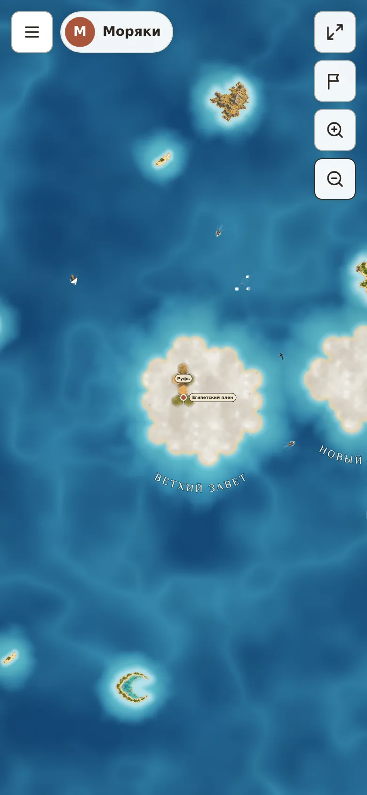
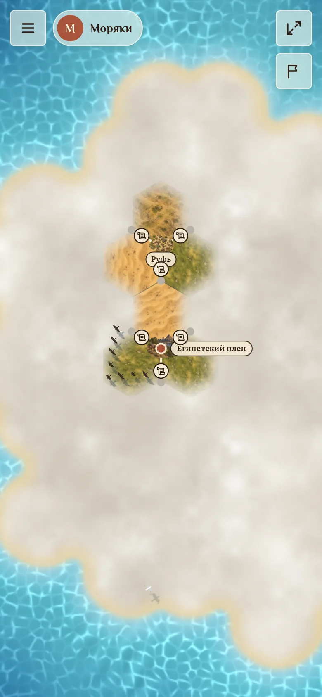
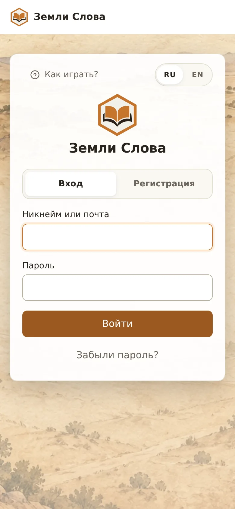
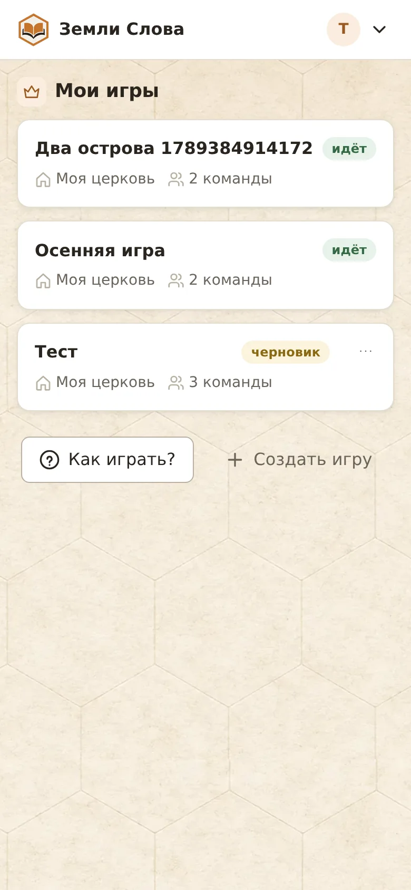
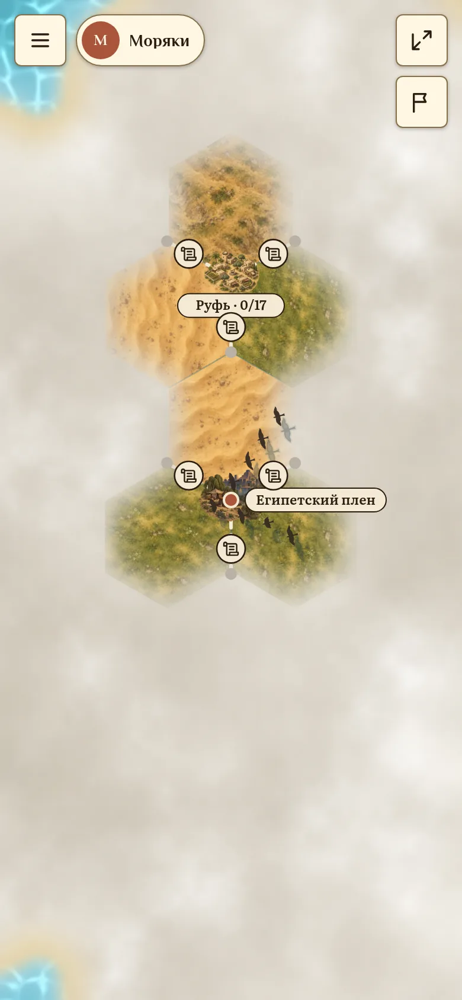
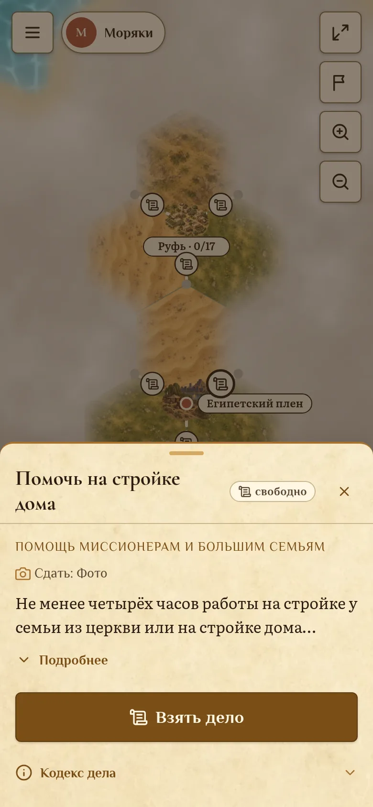
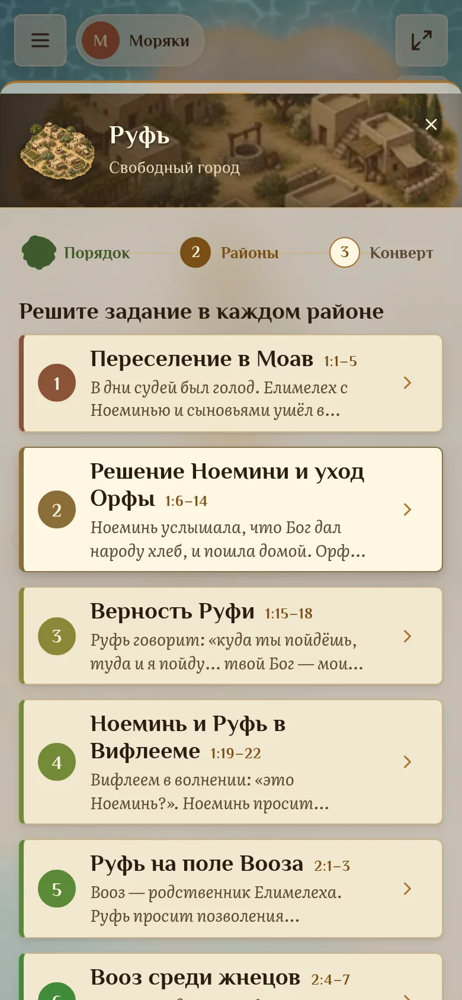
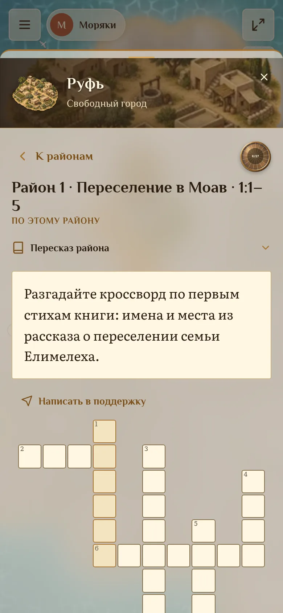
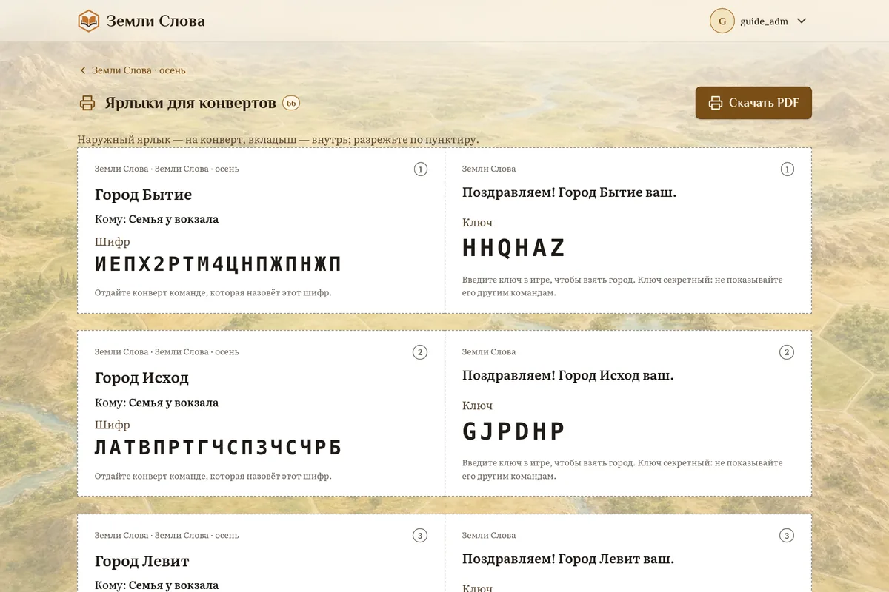
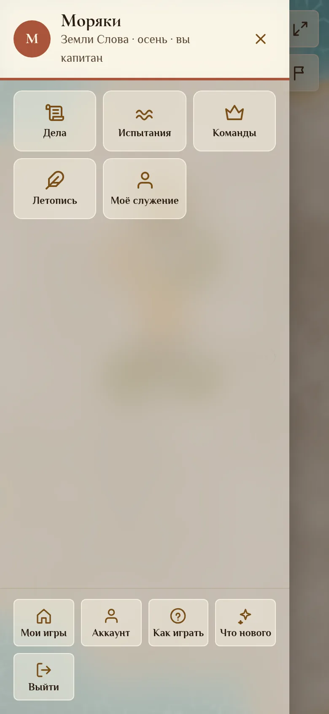
Роли раздаёт капитан. Одну роль могут носить несколько человек. Без ролей у всех игра не начнётся.
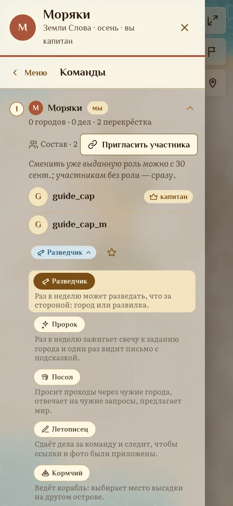
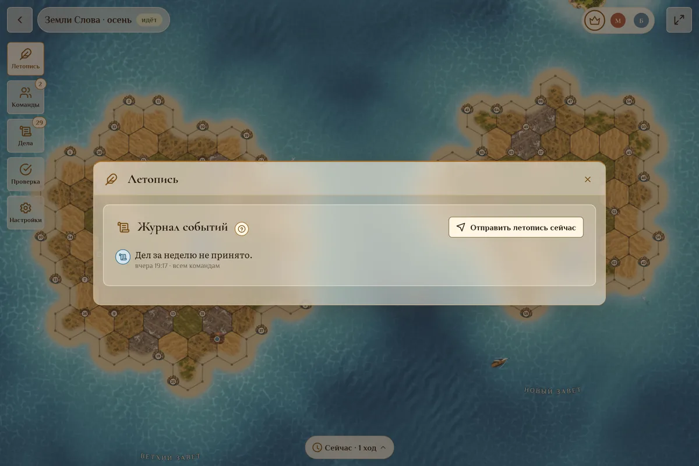
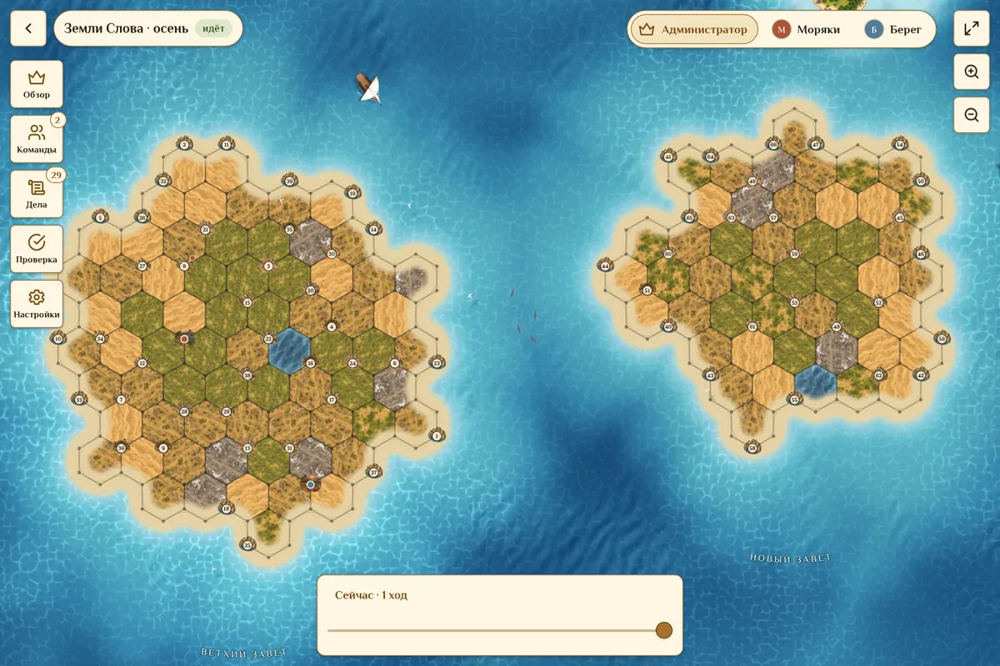
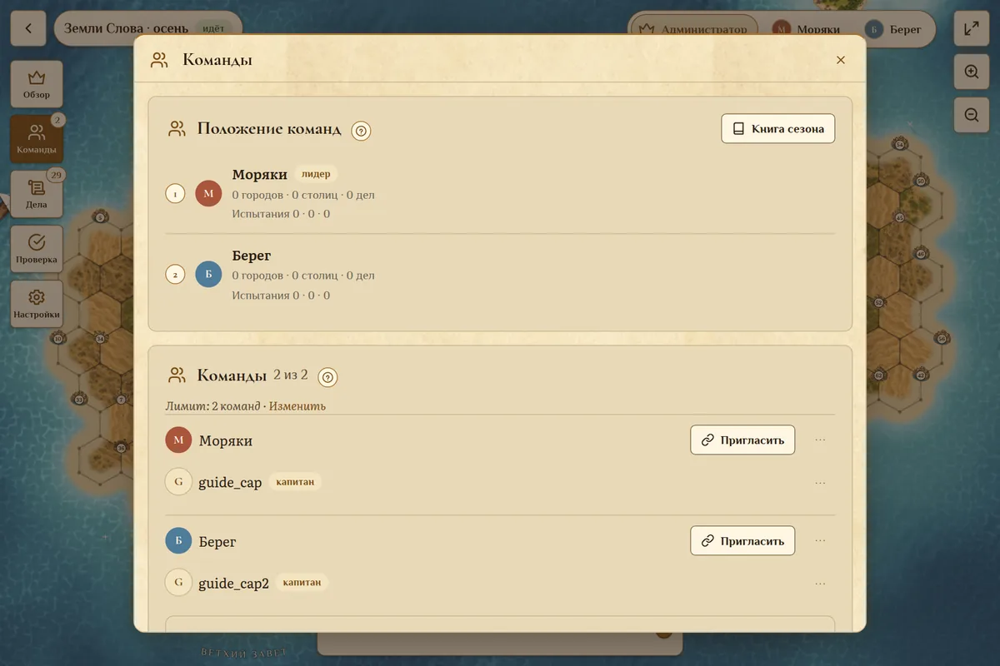
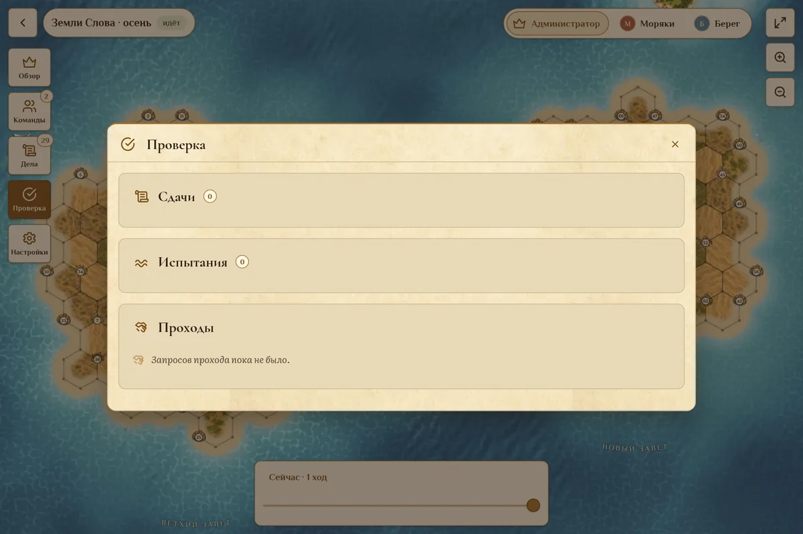
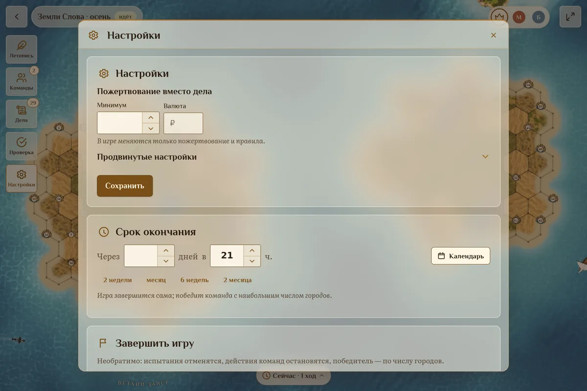
Победа — все столицы или больше городов к сроку. Но главное остаётся за картой: прочитанные книги и сделанные дела.